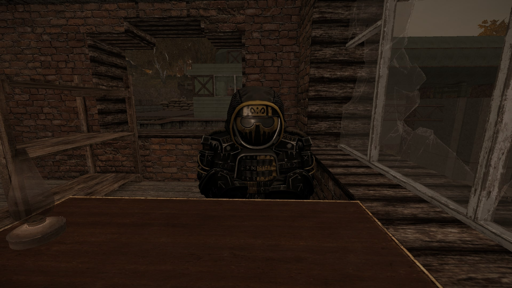
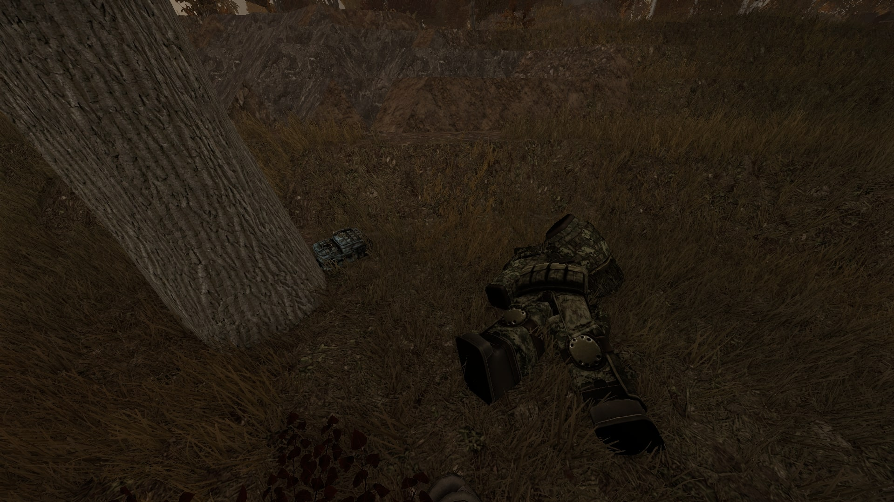
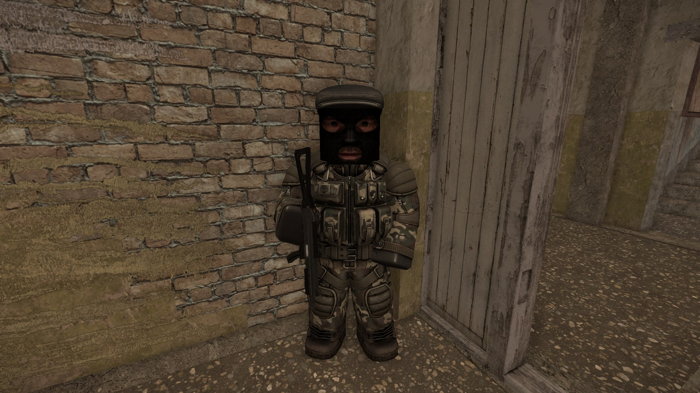
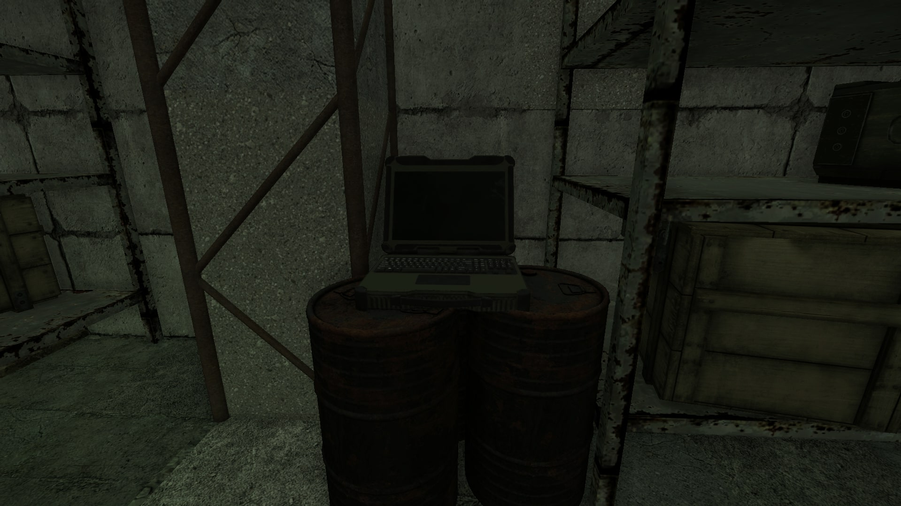

Квест берётся у бандита по прозвищу Варяг на локации Свалка. Прохождение квеста займёт около часа.
Квест линейный, без влияющих вариантов ответов и развилок.
Прохождение
Квест линейный, без возможности провала.
Начало квеста и первый тайник
Приходим к Варягу и говорим с ним.

Варяг выдаёт квест
Первым заданием будет поиск тайника по описанию локации. Ниже представлены скриншоты места с тайником.
Белая метка - местоположение тайника
Спуск к тайникуТайник в ящике
Обыскав тайник, вы найдёте артефакт «Волчьи слёзы» и стальной ящик, который нужно отнести Варягу.
Доставка посылки и засада
Как отдадите ящик, Варяг отправит вас доставлять посылку Ульянову. Приходим на отмеченную точку и ожидаем нападения снайпера — устраняем его. Рядом со снайпером будет лежать рюкзак, который необходимо обыскать.

Рюкзак и снайпер рядом с ним
Возвращаемся к Варягу и сообщаем ему о происшествии.
Поиски Зуба и взлом ПДА
Далее нас отправят на поиски Зуба. Сначала отправляемся в «Сельскую школу» на Обочине, там необходимо поговорить с NPC по кличке Ярик Штопор — он укажет местоположение Зуба на карте.

Ярик Штопор в Сельской школе
Приходим к Зубу и помогаем ему отыскать устройство для ускорения взлома ПДА снайпера.
Прежде чем спускаться в архианомалию, убедитесь что вы выдерживаете 1 ур. радиации и 1 ур. биозаражения.
Если не хотите лишний раз бегать, можете подождать 30 минут реального времени, пока Зуб не взломает ПДА.
Зуб — специалист по взломуТруп в архианомалии с нужным устройством
Отдаём устройство Зубу и возвращаемся к Варягу.
Зачистка подземелья
Теперь необходимо зачистить подземелье с группой неизвестных сталкеров, там же освобождаем заложника и забираем ноутбук.
Вход в подземельеЗаложник

Ноутбук с важной информацией
Собрав всё необходимое, возвращаемся к Варягу.
Доставка мешка Боре
Теперь Варяг попросит вас отнести мешок Боре.
Подвал с Борей
Отнеся мешок, с вами свяжется Варяг и попросит подойти к нему.
Поиск модуля и установка сканнера
В этот раз придётся отбирать на Свалке у сталкеров специальный модуль в выделенной на карте области.
Забираем сканнер и показываем его Шпале, затем идём к Варягу. Далее отправляемся на вышку и устанавливаем сканнер. Ждём конца сканирования — на вас упадёт упырь, устраняем его.
Отдайте сканнер ШпалеСканнер установлен на вышке
Тоннель и оборудование
Теперь Варяг сообщит вам, что нашёл след сталкеров, и отправит вас в небольшой отрезок тоннеля на Свалке. Заходим внутрь и находим стойки с оборудованием, осматриваем их и после стреляем по ним.
Нужное оборудование
Рассказываем Варягу о произошедшем.
Финальная битва с отрядом Гудвина
Направляемся на последнюю битву с отрядом Гудвина на сталкерской локации Чёрные Ивы. У входа в пещеру говорим с раненым членом банды Варяга и заходим внутрь.
Вход с раненым бандитом
В пещере сталкеры часто будут расположены у вас за спиной, так что внимательно отстреливайтесь от них.
Как убьёте Гудвина, можно возвращаться к Варягу. Вернувшись к Варягу и отчитавшись о выполнении задания, получаем финальную награду за квест.


 Подарок Варяга
Подарок Варяга Волчьи слёзы
Волчьи слёзы Холодец «Копытом по лицу» ×5
Холодец «Копытом по лицу» ×5 Нейротоник ×3
Нейротоник ×3 Десперол ×4
Десперол ×4 Кларинол ×3
Кларинол ×3